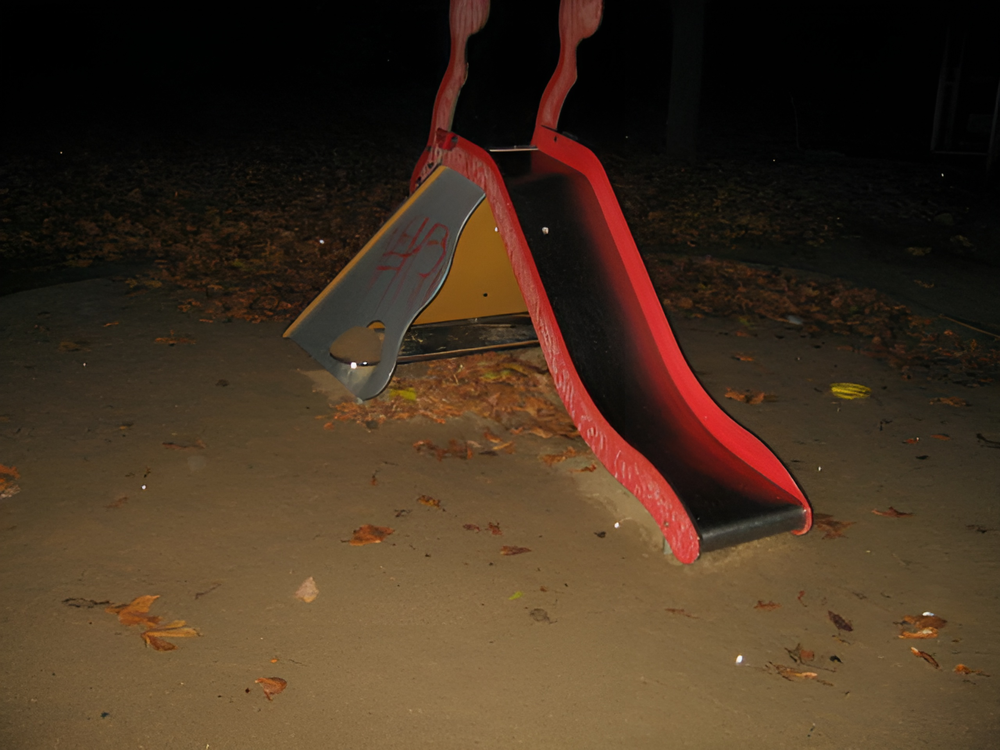

148.
Other techniques strike deeper than the foregoing. Education is no longer a simple affair of paddling a kid’s behind when he doesn’t know his lessons and patting him on the head when he does know them. It is becoming a scientific technique for controlling the child’s development. Sylvan Learning Centers, for example, have had great success in motivating children to study, and psychological techniques are also used with more or less success in many conventional schools. “Parenting” techniques that are taught to parents are designed to make children accept fundamental values of the system and behave in ways that the system finds desirable. “Mental health” programs, “intervention” techniques, psychotherapy and so forth are ostensibly designed to benefit individuals, but in practice they usually serve as methods for inducing individuals to think and behave as the system requires. (There is no contradiction here; an individual whose attitudes or behavior bring him into conflict with the system is up against a force that is too powerful for him to conquer or escape from, hence he is likely to suffer from stress, frustration, defeat. His path will be much easier if he thinks and behaves as the system requires. In that sense the system is acting for the benefit of the individual when it brainwashes him into conformity.) Child abuse in its gross and obvious forms is disapproved in most if not all cultures. Tormenting a child for a trivial reason or no reason at all is something that appalls almost everyone. But many psychologists interpret the concept of abuse much more broadly. Is spanking, when used as part of a rational and consistent system of discipline, a form of abuse? The question will ultimately be decided by whether or not spanking tends to produce behavior that makes a person fit in well with the existing system of society. In practice, the word “abuse” tends to be interpreted to include any method of child-rearing that produces behavior inconvenient for the system. Thus, when they go beyond the prevention of obvious, senseless cruelty, programs for preventing “child abuse” are directed toward the control of human behavior on behalf of the system.